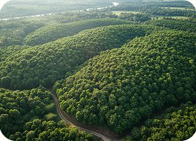

My Farm Overview
Manage your agricultural blocks, crop parameters, and treatment reports

Initao Cacao Farm Moderate Risk
Owner: Juan Dela Cruz • Location: Initao, Misamis Oriental • Size: 8.3 Hectares
65%
Farm Health Score
Based on real-time pathogen load of drone diagnostic scans
Farm Waypoints
Waypoint 1Healthy
Health Index92%
Last Scanned: TodayAffected: 0.0 ha
Waypoint 2Mild Spots
Health Index81%
Last Scanned: TodayAffected: 0.2 ha
Waypoint 3Moderate Outbreak
Health Index58%
Last Scanned: 1d agoAffected: 1.1 ha
Waypoint 5Severe Risk
Health Index29%
Last Scanned: 1d agoAffected: 2.4 ha
Quick Actions
Recent Activity Log
UAV Autonomous Scan Completed
Drone scan successful in Waypoint 1 and Waypoint 2
Today, 10:15 AMCritical Alert: Severe Black Pod Detection
High infection rate identified in Waypoint 5
Yesterday, 4:32 PMFeedback Form Submitted
Reported treatment update for Waypoint 3
Oct 24, 11:15 AMFarmer Action & Ground Feedback Report
Help tune our drone AI diagnostic capabilities. If you have confirmed infections, please submit treatment feedback back to the system.